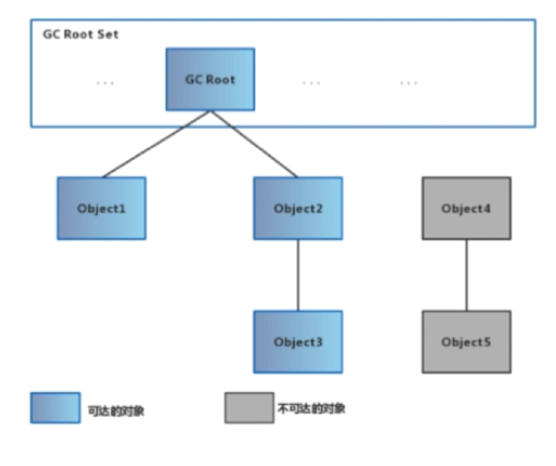
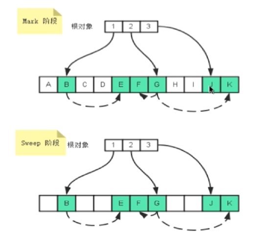
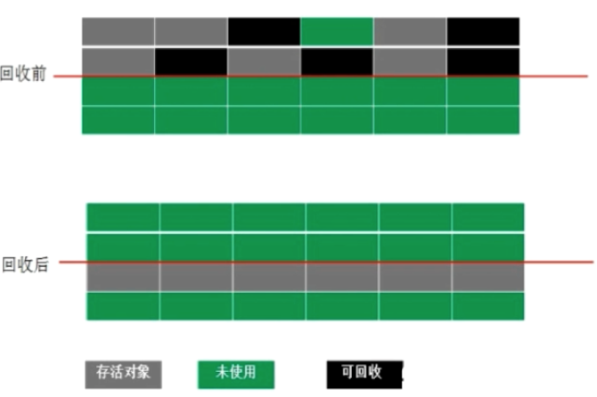
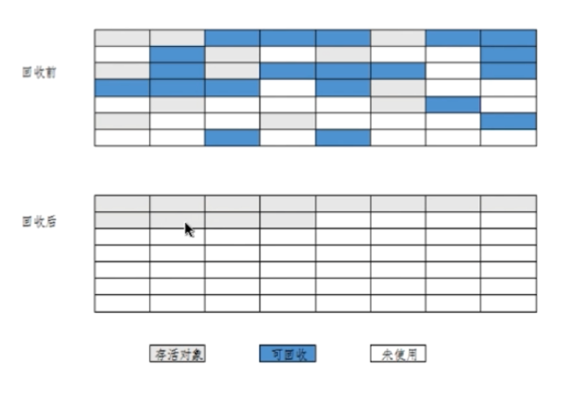
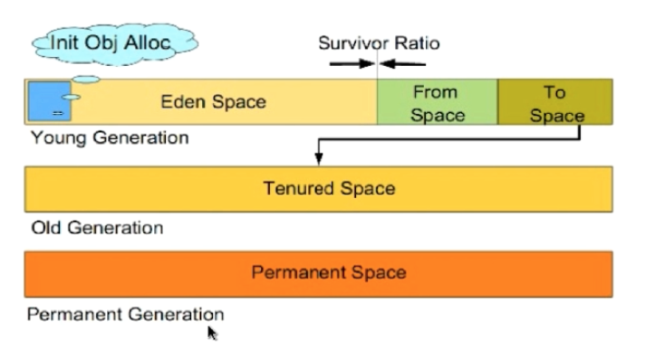
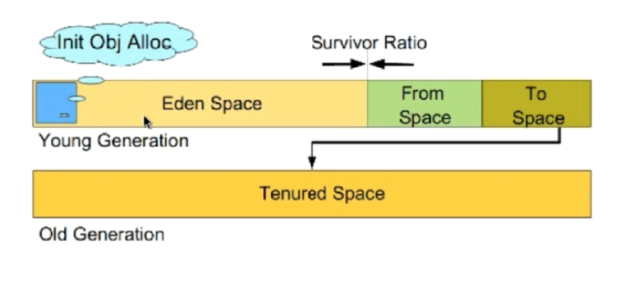
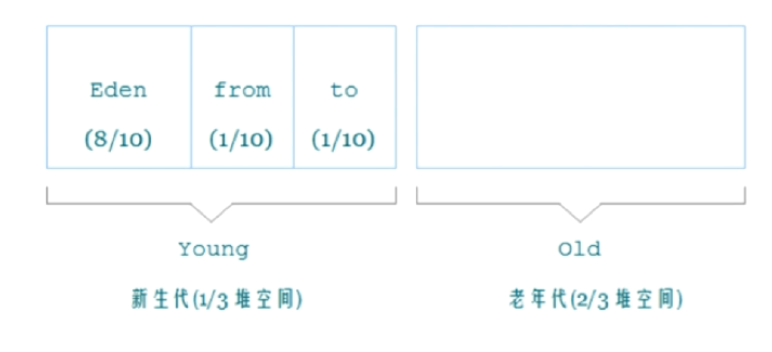
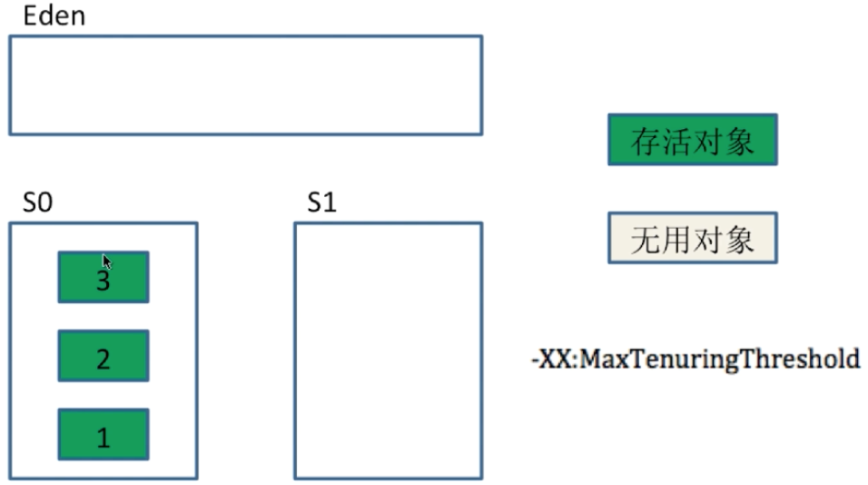

<!DOCTYPE HTML>
<html>
<head><meta name="generator" content="Hexo 3.8.0">
  <meta charset="utf-8">
  <meta http-equiv="X-UA-Compatible" content="IE=edge">
  <meta name="apple-mobile-web-app-capable" content="yes">
  <meta name="apple-mobile-web-app-status-bar-style" content="black">
  <meta name="google-site-verification" content>
  
  <title>Java GC</title>
  <meta name="author" content="strawberry">
  <meta name="description" content="Pain is temporary Pride is forever">
  
  
  <meta property="og:title" content="Java GC">
  <meta name="viewport" content="width=device-width, initial-scale=1, maximum-scale=1">
  <meta property="og:site_name" content="strawberryfields">
  <link href="/apple-touch-icon-precomposed.png" sizes="180x180" rel="apple-touch-icon-precomposed">
  <link rel="alternate" href="/atom.xml" title="strawberryfields" type="application/atom+xml">
  <link rel="stylesheet" href="/css/m.min.css">
  <link rel="icon" type="image/x-icon" href="/favicon.ico">
  <script type="text/javascript" src="https://cdnjs.cloudflare.com/ajax/libs/mathjax/2.7.5/MathJax.js?config=TeX-MML-AM_CHTML" async></script>
</head>
</html>
<body>
  <a id="top"></a>
  <div id="main">
    <div class="main-ctnr">
      <div class="behind">
  <a href="/" class="back black-color">
    <svg class="i-close" viewbox="0 0 32 32" width="22" height="22" fill="none" stroke="currentcolor" stroke-linecap="round" stroke-linejoin="round" stroke-width="3">
        <path d="M2 30 L30 2 M30 30 L2 2"/>
    </svg>
  </a>
  <div class="description">
    &nbsp;郁郁青青 长过千寻
  </div>
</div>


  <article class="standard post">
    <div class="title">
      
  
    <h1 class="page-title center">
        Java GC
    </h1>
  


    </div>
    <div class="meta center">
      <time datetime="2020-03-06T18:28:47.000Z" itemprop="datePublished">
  <svg class="i-calendar" viewbox="0 0 32 32" width="16" height="16" fill="none" stroke="currentcolor" stroke-linecap="round" stroke-linejoin="round" stroke-width="2">
    <path d="M2 6 L2 30 30 30 30 6 Z M2 15 L30 15 M7 3 L7 9 M13 3 L13 9 M19 3 L19 9 M25 3 L25 9"/>
  </svg>
  &nbsp;
  2020-03-07
</time>


    
    &nbsp;
    <svg class="i-tag" viewbox="0 0 32 32" width="16" height="16" fill="none" stroke="currentcolor" stroke-linecap="round" stroke-linejoin="round" stroke-width="2">
      <circle cx="24" cy="8" r="2"/>
      <path d="M2 18 L18 2 30 2 30 14 14 30 Z"/>
    </svg>
    &nbsp;
    <a href="/categories/笔记本/">笔记本</a>


    </div>
    <hr>
    
      <ol class="toc"><li class="toc-item toc-level-2"><a class="toc-link" href="#对象被判定为垃圾的标准"><span class="toc-text">对象被判定为垃圾的标准</span></a></li><li class="toc-item toc-level-2"><a class="toc-link" href="#垃圾回收算法"><span class="toc-text">垃圾回收算法</span></a><ol class="toc-child"><li class="toc-item toc-level-3"><a class="toc-link" href="#标记---清除算法mark-and-sweep"><span class="toc-text">标记 - 清除算法（Mark and Sweep）</span></a></li><li class="toc-item toc-level-3"><a class="toc-link" href="#复制算法copying"><span class="toc-text">复制算法（Copying）</span></a></li><li class="toc-item toc-level-3"><a class="toc-link" href="#标记---整理算法compacting"><span class="toc-text">标记 - 整理算法（Compacting）</span></a></li><li class="toc-item toc-level-3"><a class="toc-link" href="#分代收集算法generational-collector"><span class="toc-text">分代收集算法（Generational Collector）</span></a></li></ol></li></ol>
    
    <div class="picture-container">
      
    </div>
    <p>Java 垃圾回收机制回收分配给对象的内存，正因为有了这个机制，我们能看似不用关心内存的释放，将其交由 JVM 来管理。垃圾回收机制几乎成为 Java 之后出生语言的标配，目前 Java 的回收机制仍在演进。</p>
<h2 id="对象被判定为垃圾的标准">对象被判定为垃圾的标准</h2>
<ul>
<li>没有被其它对象引用的对象
<ul>
<li>引用计数算法
<ul>
<li>判断对象的引用数量
<ul>
<li>通过判断对象的引用数量来决定对象是否可以被回收</li>
<li>每个对象实例都有一个引用计数器，被引用则 + 1，完成引用则 - 1</li>
<li>任何引用对象为 0 的对象实例可被当作垃圾收集</li>
</ul></li>
<li>优点：执行效率高，程序执行受影响较小</li>
<li>缺点：无法检测出循环引用的情况，导致内存泄漏（父子对象互相引用）</li>
</ul></li>
<li>可达性分析算法
<ul>
<li>通过判断对象的引用链是否可达来决定对象是否可以被回收
<ul>
<li></li>
</ul></li>
<li>可以作为 GC Root 的对象
<ul>
<li>虚拟机中引用的对象（栈帧中的本地变量表）（如 new obj，cp&gt;局部变量，jbbl 被销毁钱的对象成为 GCR）</li>
<li>方法区中的常量引用对象（如类定义常量，常量保存 obj 地址，obj 成为 GCR）</li>
<li>方法区中的类静态属性引用对象</li>
<li>本地方法栈中 JNI（Native 方法） 的引用对象（非 Java 构成的 obj）</li>
<li>活跃线程的引用对象</li>
</ul></li>
</ul></li>
</ul></li>
</ul>
<h2 id="垃圾回收算法">垃圾回收算法</h2>
<h3 id="标记---清除算法mark-and-sweep">标记 - 清除算法（Mark and Sweep）</h3>
<ul>
<li>标记：从根集合进行扫描，对存活的对象进行标记（首先可达性算法）</li>
<li>清除：对堆内存从头到尾进行线性遍历，回收不可达对象内存</li>
<li>
<ul>
<li>碎片化，产生不连续的内存碎片，需要分配较大内存对象时无法找到连续内存，而不得不触发另一次垃圾收集工作</li>
</ul></li>
</ul>
<h3 id="复制算法copying">复制算法（Copying）</h3>
<ul>
<li>分为对象面和空闲面</li>
<li>对象在对象面上创建</li>
<li>存活的对象被从对象面复制到空闲面</li>
<li>将对象面所有对象内存清楚</li>
<li>
<ul>
<li>解决碎片化问题</li>
<li>顺序分配内存，简单高效</li>
<li>适用于对象存活率低的场景</li>
</ul></li>
</ul>
<h3 id="标记---整理算法compacting">标记 - 整理算法（Compacting）</h3>
<ul>
<li>应对 50% 空间保证 100% 的对象存活的极端情况需要另外 50% 空间担保，老年代不适用 Copying</li>
<li>标记：从根集合进行扫描，对存活的对象进行标记</li>
<li>清除：移动所有存活的对象，且按照内存地址次序依次排列，然后将末端内存地址以后的内存全部回收</li>
<li>
<ul>
<li>避免内存不连续性</li>
<li>不用设置两块内存互换</li>
<li>适用于存活率高的场景</li>
</ul></li>
</ul>
<h3 id="分代收集算法generational-collector">分代收集算法（Generational Collector）</h3>
<ul>
<li>垃圾回收算法的组合拳</li>
<li>按照对象生命周期的不同划分区域以采用不同的垃圾回收算法</li>
<li>目的：提高 JVM 回收效率
<ul>
<li>jdk6, jdk7
<ul>
<li></li>
</ul></li>
<li>jdk8（年轻代存活率低：Copying；老年代存活率高：Compacting || Mark and Sweap）
<ul>
<li></li>
</ul></li>
</ul></li>
<li>GC 的分类
<ul>
<li>Minor GC</li>
<li>Full GC</li>
</ul></li>
<li>年轻代：尽可能快速地收集掉那些生命周期短的对象
<ul>
<li>Eden 区（放不下可能放置 Survivor，甚至老年代中）</li>
<li>两个 Survivor 区</li>
<li></li>
<li>年轻代垃圾回收演示
<ul>
<li></li>
<li>默认 15 岁到老年代，MaxTenuringThreshold</li>
</ul></li>
<li>如何晋升老年代
<ul>
<li>经历一定 Minor 次数依然存活的对象</li>
<li>Survivor 区中存放不下的对象</li>
<li>新生成的大对象（-XX:+PretenuerSizeThreshold 来控制大对象大小）</li>
</ul></li>
<li>常用的调优参数
<ul>
<li>-XX:SurvivorRatio：Eden 和 Survivor 的比值，默认 8：1</li>
<li>-XX:NewRatio：老年代和年轻代内存大小比例，比如值为 2，老年代是年轻代的两倍，即年轻代占据内存的 3/1
<ul>
<li>新生代和老年代的总大小如何决定：-Xms 堆的初始值，-Xmx 堆能达到的最大值</li>
</ul></li>
<li>-XX:MaxTenuringThreshold：对象从年轻代晋升到老年代经过 GC 次数的最大阀值</li>
</ul></li>
</ul></li>
<li>老年代：存放生命周期较长的对象
<ul>
<li>回收算法
<ul>
<li>标记 - 清理算法</li>
<li>标记 - 整理算法</li>
</ul></li>
<li>Full GC 和 Major GC（回收同时通常也伴随对年轻代堆内存的回收）</li>
<li>Full 比 Minor 慢，但执行频率低
<ul>
<li>触发 Full GC 条件
<ul>
<li>老年代空间不足（为了避免，最好不要创建太大对象）</li>
<li>永久代空间不足（jdk 7 之前的版本）</li>
<li>CMS GC 时出现 promotion failed, concurrent mode failure</li>
<li>Minor GC 晋升到老年代的平均大小大于老年代的剩余空间</li>
<li>调用 System.gc()</li>
<li>使用 RMI 来进行 RPC 或管理的 JDK 应用，每小时执行 1 次 Full GC 2</li>
</ul></li>
</ul></li>
</ul></li>
</ul>


  </article>
  
    <script async src="//busuanzi.ibruce.info/busuanzi/2.3/busuanzi.pure.mini.js">
  </script>
  <div class="busuanzi center">
    页阅读量:&nbsp;<span id="busuanzi_value_page_pv"></span>&nbsp;・&nbsp;
    站访问量:&nbsp;<span id="busuanzi_value_site_pv"></span>&nbsp;・&nbsp;
    站访客数:&nbsp;<span id="busuanzi_value_site_uv"></span>
  </div>


    


    </div>
  </div>
  <footer class="page-footer"><div class="clearfix">
</div>
<div class="right-foot">
    <div class="firstrow">
        <a href="#top" target="_self">
        <svg class="i-caret-right" viewbox="0 0 32 32" width="24" height="24" fill="none" stroke="currentcolor" stroke-linecap="round" stroke-linejoin="round" stroke-width="3">
            <path d="M10 30 L26 16 10 2 Z"/>
        </svg>
        </a>
        © chen 2016-2020
    </div>
    <div class="secondrow">
        <a href="https://github.com/gaoryrt/hexo-theme-pln">
        Theme Pln
        </a>
    </div>
</div>
<div class="clearfix">
</div>
</footer>
  <script src="//cdn.bootcss.com/jquery/2.2.1/jquery.min.js"></script>
<script src="/js/search.min.js"></script>
<script type="text/javascript">

// disqus scripts


// dropdown scripts
$(".dropdown").click(function(event) {
  var current = $(this);
  event.stopPropagation();
  $(current).children(".dropdown-content")[($(current).children(".dropdown-content").hasClass("open"))?'removeClass':'addClass']("open")
});
$(document).click(function(){
    $(".dropdown-content").removeClass("open");
})

var path = "/search.xml";
searchFunc(path, 'local-search-input', 'local-search-result');

</script>

</body>
</html>
